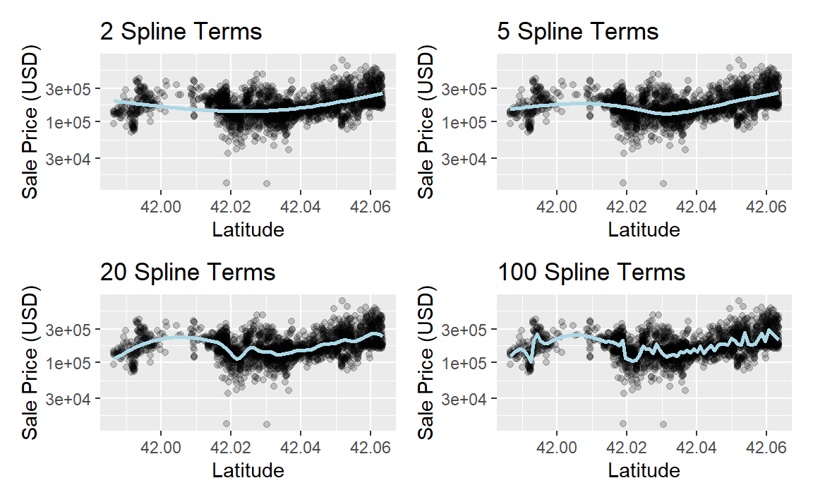

library(tidymodels) # Includes the recipes package
#> ── Attaching packages ─────────────────────────────────── tidymodels 1.4.1 ──
#> ✔ broom 1.0.9 ✔ recipes 1.3.1
#> ✔ dials 1.4.2 ✔ rsample 1.3.1
#> ✔ dplyr 1.1.4 ✔ tailor 0.1.0
#> ✔ ggplot2 3.5.2 ✔ tidyr 1.3.1
#> ✔ infer 1.0.9 ✔ tune 2.0.0
#> ✔ modeldata 1.5.1 ✔ workflows 1.3.0
#> ✔ parsnip 1.3.3 ✔ workflowsets 1.1.1
#> ✔ purrr 1.1.0 ✔ yardstick 1.3.2
#> ── Conflicts ────────────────────────────────────── tidymodels_conflicts() ──
#> ✖ purrr::discard() masks scales::discard()
#> ✖ dplyr::filter() masks stats::filter()
#> ✖ dplyr::lag() masks stats::lag()
#> ✖ recipes::step() masks stats::step()
tidymodels_prefer()
data(ames)
ames <- mutate(ames, Sale_Price = log10(Sale_Price))
set.seed(502)
ames_split <- initial_split(ames, prop = 0.80, strata = Sale_Price)
ames_train <- training(ames_split)
ames_test <- testing(ames_split)
simple_ames <-
recipe(Sale_Price ~ Neighborhood + Gr_Liv_Area + Year_Built + Bldg_Type,
data = ames_train
) %>%
step_log(Gr_Liv_Area, base = 10) %>%
step_dummy(all_nominal_predictors())
simple_ames
#>
#> ── Recipe ───────────────────────────────────────────────────────────────────
#>
#> ── Inputs
#> Number of variables by role
#> outcome: 1
#> predictor: 4
#>
#> ── Operations
#> • Log transformation on: Gr_Liv_Area
#> • Dummy variables from: all_nominal_predictors()8 Feature Engineering with recipes
特征工程(Feature Engineering)需要重新格式化预测变量的值，使其更易于模型有效使用。这包括对数据进行转换(transformation)和编码(encoding)，以最佳方式呈现其重要特征。想象一下，在一个数据集中有两个预测变量，将它们以比率的形式在模型中呈现会更有效；根据这两个原始变量的比率创建一个新的预测变量，就是特征工程的一个简单例子。
以Ames市一栋房屋的位置为例，有多种方式可以将这种空间信息提供给模型，包括所在社区（一种定性衡量标准）、经度/纬度、到最近学校或Iowa State University的距离等等。在选择如何在建模中对这些数据进行编码时，我们可能会选择一个我们认为与结果关联性最强的选项。数据的原始格式，例如数值型（如距离）与分类型（如社区），也是特征工程选择中的一个驱动因素。
特征工程的其他预处理示例包括：
可以通过特征提取或移除部分预测变量来降低预测变量之间的相关性。
当一些预测变量存在缺失值时，可以使用子模型对其进行插补。
使用方差类度量的模型可能会通过估计一种转换方法，将某些偏斜预测变量的分布强制变为对称分布，进而从中受益。
重新格式化操作。有些模型会使用几何距离度量，因此，数值预测变量需要进行中心化和标准化处理，以确保它们都采用相同的单位。否则，距离值会因各列的尺度不同而产生偏差。
不同的模型有不同的预处理要求，有些模型，例如基于树的模型，几乎不需要任何预处理。附录A包含一个小表格，列出了针对不同模型的推荐预处理技术。在本章中，我们将介绍recipes包，你可以使用它将不同的特征工程和预处理任务组合成一个单一对象，然后将这些转换应用于不同的数据集。与用于模型的parsnip类似，recipes包是tidymodels核心包之一。
本章使用了Ames房价数据以及本书到目前为止创建的R对象，如第7.7节所概述的那样。
A Simple recipe() for the Ames Housing Data
在本节中，我们将重点关注Ames房产数据中可用预测变量的一小部分：
社区（定性的，训练集中有29个社区）
地上总居住面积（连续变量，命名为
Gr_Liv_Area）建造年份（
Year_Built）建筑物类型（
Bldg_Type，其中OneFam(n = 1,936)，TwoFmCon(n = 50)，Duplex(n = 88)，Twnhs(n = 77)，TwnhsE(n = 191)）
假设最初的普通线性回归模型是根据这些数据拟合的。回想一下，在第4章中，销售价格已经预先进行了对数转换，一个标准的lm()调用可能如下所示：
当执行此函数时，数据会从数据框转换为数值型的设计矩阵（也称为模型矩阵），然后使用最小二乘法来估计参数。在3.2节中，我们列出了R模型公式的多种用途；现在我们仅关注数据处理方面。该公式的作用可以分解为一系列步骤：
销售价格被定义为结果，而社区、总居住面积、建造年份和建筑类型变量都被定义为预测因子。
对总居住面积这一预测变量进行了对数转换。
社区和建筑类型列从非数字格式转换为数字格式（因为最小二乘法需要数字预测变量）。
如第3章所述，公式法会将这些数据处理操作应用于任何传入predict()函数的数据，包括新数据。
recipe会定义一个包含一系列数据处理步骤的对象。与建模函数中的公式方法不同，recipe通过step_*()函数来定义步骤，而不会立即执行这些步骤；它仅仅是对应该做什么的一种规范说明。以下是一个与前面的公式等效的recipe对象，其基于第5.5节中的代码摘要构建而成：
让我们来详细分析一下：
带有公式的
recipe()调用会告知“配方”的“原料”（例如，预测变量、结果变量）。它仅使用ames_train数据来确定各列的数据类型。step_log()声明应对Gr_Liv_Area进行对数转换。step_dummy()指定了哪些变量应该从定性格式转换为定量格式，在这种情况下，会使用虚拟变量或指示变量。指示变量或虚拟变量是一种二元数值变量（由1和0组成的列），用于编码定性信息；我们将在第8.4.1节更深入地探讨这类变量。
函数all_nominal_predictors()会捕获当前为因子型或字符型（即名义型）的任何预测变量列的名称。这是一个类似dplyr的选择器函数，与starts_with()或matches()类似，但只能在recipe对象内部使用。recipe包特有的其他选择器包括：all_numeric_predictors()、all_numeric()、all_predictors()和all_outcomes()。与dplyr类似，可以使用一个或多个未加引号的表达式（用逗号分隔）来选择每个步骤所作用的列。
与公式或原始预测变量相比，使用recipe有几个优势，包括：
由于这些计算与建模函数并非紧密耦合，因此它们可以在不同模型之间重复使用。
与公式相比，recipe能提供更广泛的数据处理选择。
语法可以非常简洁。例如，
all_nominal_predictors()可用于捕获许多变量以进行特定类型的处理，而公式则需要明确列出每个变量。所有数据处理都可以被捕获在一个单独的R对象中，而不是在重复的脚本中，甚至不会分散在不同的文件里。
Using Recipes
正如我们在第7章中讨论的那样，预处理选项和特征工程通常应被视为建模工作流的一部分，而非一项独立任务。workflows包包含用于处理不同类型预处理器的高级函数。我们之前的工作流（lm_wflow）使用了一组简单的dplyr选择器：
lm_model <- linear_reg() %>% set_engine("lm")
lm_wflow <-
workflow() %>%
add_model(lm_model) %>%
add_variables(outcome = Sale_Price, predictors = c(Longitude, Latitude))为了通过更复杂的特征工程改进这种方法，让我们使用simple_ames对象对建模数据进行预处理。此对象可附加到工作流中：
lm_wflow %>%
add_recipe(simple_ames)
#> Error in `add_recipe()`:
#> ! A recipe cannot be added when variables already exist.直接添加行不通，因为工作流只能有一种预处理方法，所以在添加recipe对象之前，需要先移除现有的预处理器。
lm_wflow <-
lm_wflow %>%
remove_variables() %>%
add_recipe(simple_ames)
lm_wflow
#> ══ Workflow ═════════════════════════════════════════════════════════════════
#> Preprocessor: Recipe
#> Model: linear_reg()
#>
#> ── Preprocessor ─────────────────────────────────────────────────────────────
#> 2 Recipe Steps
#>
#> • step_log()
#> • step_dummy()
#>
#> ── Model ────────────────────────────────────────────────────────────────────
#> Linear Regression Model Specification (regression)
#>
#> Computational engine: lm让我们通过一个简单的fit()调用同时估计recipe对象和模型：
lm_fit <- fit(lm_wflow, ames_train)predict()方法会先对新数据应用与训练集相同的预处理，然后再将其传递给模型的predict()方法：
predict(lm_fit, ames_test %>% slice(1:3))
#> Warning in predict.lm(object = object$fit, newdata = new_data, type =
#> "response", : prediction from rank-deficient fit; consider predict(.,
#> rankdeficient="NA")
#> # A tibble: 3 × 1
#> .pred
#> <dbl>
#> 1 5.08
#> 2 5.32
#> 3 5.28如果我们只需要模型对象或recipe对象，可以使用extract_*函数来获取它们：
# Get the recipe after it has been estimated:
lm_fit %>%
extract_recipe(estimated = TRUE)
#>
#> ── Recipe ───────────────────────────────────────────────────────────────────
#>
#> ── Inputs
#> Number of variables by role
#> outcome: 1
#> predictor: 4
#>
#> ── Training information
#> Training data contained 2342 data points and no incomplete rows.
#>
#> ── Operations
#> • Log transformation on: Gr_Liv_Area | Trained
#> • Dummy variables from: Neighborhood Bldg_Type | Trained
# To tidy the model fit:
lm_fit %>%
# This returns the parsnip object:
extract_fit_parsnip() %>%
# Now tidy the linear model object:
tidy() %>%
slice(1:5)
#> # A tibble: 5 × 5
#> term estimate std.error statistic p.value
#> <chr> <dbl> <dbl> <dbl> <dbl>
#> 1 (Intercept) -0.669 0.231 -2.90 3.80e- 3
#> 2 Gr_Liv_Area 0.620 0.0143 43.2 2.63e-299
#> 3 Year_Built 0.00200 0.000117 17.1 6.16e- 62
#> 4 Neighborhood_College_Creek 0.0178 0.00819 2.17 3.02e- 2
#> 5 Neighborhood_Old_Town -0.0330 0.00838 -3.93 8.66e- 5在工作流对象之外使用（和调试）recipe对象的工具在第16.4节中有描述。
How Data Are Used by the recipe()
数据在不同阶段被传递给recipe对象。
首先，在调用
recipe(..., data)时，数据集用于确定每列的数据类型，以便可以使用诸如all_numeric()或all_numeric_predictors()之类的选择器。其次，在使用
fit(workflow, data)准备数据时，训练集会用于所有估计操作，包括可能作为workflow一部分的recipe对象，从确定因子水平到计算主成分分析（PCA）组件，以及介于两者之间的所有操作。所有预处理和特征工程步骤都仅使用训练数据。否则，信息泄露可能会在模型处理新数据时对其性能产生负面影响。最后，在使用
predict(workflow, new_data)时，不会利用new_data中的值重新估计任何模型或预处理器参数（如来自recipe对象的那些参数）。以使用step_normalize()进行中心化和标准化为例，在调用predict()时，预测时的新样本会使用从训练集中确定的相应列的均值和标准差进行标准化。
Examples of Recipe Steps
在继续之前，让我们深入了解一些recipe包中的函数，并探讨一些最重要的step_*()函数。这些步骤函数各自指定了特征工程过程中一个特定的可能步骤，并且不同的步骤函数会对数据列产生不同的影响。
Encoding qualitative data in a numeric format
特征工程中最常见的任务之一是对分类数据或定性数据（因子或字符）进行转换，以便对其进行编码或以数值形式表示。有时，在进行此类转换之前，我们可以以有用的方式修改定性列的因子水平。例如，step_unknown()可用于将缺失值更改为一个专用的因子水平。同样，如果我们预计在未来的数据中可能会遇到新的因子水平，step_novel()可以为此分配一个新的水平。
此外，step_other()可用于分析训练集中因子水平的频率，并将不常出现的值转换为一个通用的“other”水平，其阈值可以指定。我们数据中的Neighborhood预测变量就是一个很好的例子，如 Figure 1 所示。
ggplot(ames_train, aes(y = Neighborhood)) +
geom_bar() +
labs(y = NULL)在这里我们可以看到，有两个社区在训练集中的房产数量少于5处（Landmark和Green Hills）；在这种情况下，测试集中完全没有包含Landmark社区的房屋。对于某些模型而言，列中存在只有一个非零项的虚拟变量可能会产生问题。至少，这些特征不太可能对模型起到重要作用。如果我们在recipe中添加step_other(Neighborhood, threshold = 0.01)，那么占比最低的1%的社区将会被归为一个名为“other”的新类别。在这个训练集中，这将涵盖7个社区。
对于Ames数据，我们可以修改recipe对象以使用：
simple_ames <-
recipe(Sale_Price ~ Neighborhood + Gr_Liv_Area + Year_Built + Bldg_Type,
data = ames_train
) %>%
step_log(Gr_Liv_Area, base = 10) %>%
step_other(Neighborhood, threshold = 0.01) %>%
step_dummy(all_nominal_predictors())许多（但并非所有）基础模型计算都要求将预测变量值编码为数字。值得注意的例外包括基于树的模型、基于规则的模型和朴素贝叶斯模型。
将因子预测变量转换为数值格式最常用的方法是创建虚拟变量或指示变量。让我们以Ames数据中关于建筑类型的预测变量为例，这是一个具有五个水平的因子变量（见 Table 1 ）。对于虚拟变量，单个Bldg_Type列将被四个数值列取代，这些列的值要么是0要么是1。这些二元变量代表特定的因子水平值。在R语言中，惯例是排除第一个因子水平所对应的列（在这种情况下是OneFam）。Bldg_Type列将被一个名为TwoFmCon的列取代，当行中是该值时，该列的值为1，否则为0。其他三个列也以类似的方式创建：
| Raw Data | TwoFmCon | Duplex | Twnhs | TwnhsE |
|---|---|---|---|---|
| OneFam | 0 | 0 | 0 | 0 |
| TwoFmCon | 1 | 0 | 0 | 0 |
| Duplex | 0 | 1 | 0 | 0 |
| Twnhs | 0 | 0 | 1 | 0 |
| TwnhsE | 0 | 0 | 0 | 1 |
为什么不是五个都用呢？最基本的原因是简洁性：如果你知道这四个列的值，你就能确定最后一个的值，因为这些类别是互斥的。从更专业的角度来说，经典的理由是，包括普通线性回归在内的许多模型，当列之间存在线性相关性时，会出现数值问题。如果将所有五个建筑类型指示列都包含进来，它们加起来就会等于截距列（如果有的话）。这会在底层的矩阵代数中导致问题，甚至可能是直接的错误。
完整的编码集可用于某些模型。这传统上被称为独热编码，可通过step_dummy()的one_hot参数来实现。
step_dummy()的一个实用功能是，能更好地控制生成的虚拟变量的命名方式。在基础R中，虚拟变量的名称会将变量名和水平值合并，形成类似NeighborhoodVeenker这样的名称。而recipes默认使用下划线作为名称和水平值之间的分隔符（例如，Neighborhood_Veenker），并且还提供了自定义名称格式的选项。Recipes中的默认命名规则，使得在后续步骤中更容易使用选择器捕获这些新列，比如starts_with("Neighborhood_")。
传统的虚拟变量要求必须已知所有可能的类别，才能创建一整套数值特征。还有其他方法可以将其转换为数值格式。特征哈希方法仅根据类别的值将其分配到预定义的虚拟变量池中。效应编码或似然编码用一个单一的数值列替换原始数据，该数值列用于衡量这些数据的效应。特征哈希和效应编码都能无缝处理数据中出现新因子水平的情况。第17章探讨了这些以及其他用于编码分类数据的方法，这些方法超越了简单的虚拟变量或指示变量。
不同的recipe步骤函数应用于数据中的变量时，表现会有所不同。例如，step_log()会在不更改名称的情况下就地修改列。其他步骤，如step_dummy()，会删除原始数据列，并替换为一个或多个名称不同的列。recipe步骤函数的效果取决于所进行的特征工程转换类型。
Interaction terms
交互效应涉及两个或多个预测变量。当一个预测变量对结果的影响取决于一个或多个其他预测变量时，就会产生这种效应。例如，如果你试图预测通勤期间的交通流量，两个潜在的预测变量可能是你通勤的具体时间和天气。然而，交通流量与恶劣天气之间的关系在一天中的不同时间是不同的。在这种情况下，你可以在模型中添加这两个预测变量之间的交互项，以及原来的两个预测变量（称为主效应）。从数值上讲，预测变量之间的交互项被编码为它们的乘积。交互是根据它们对结果的影响来定义的，并且可以是不同类型数据（如数值型、分类型等）的组合。第7章更详细地讨论了交互效应以及如何检测它们。
在探究Ames训练集后，我们可能会发现，不同建筑类型的总居住面积的回归斜率存在差异，如 Figure 2 所示。
ggplot(ames_train, aes(x = Gr_Liv_Area, y = 10^Sale_Price)) +
geom_point(alpha = .2) +
facet_wrap(~Bldg_Type) +
geom_smooth(method = lm, formula = y ~ x, se = FALSE, color = "lightblue") +
scale_x_log10() +
scale_y_log10() +
labs(x = "Gross Living Area", y = "Sale Price (USD)")在recipe对象中如何指定交互项？基础R公式会使用:来表示交互项，所以我们会这样使用：
其中，*会将这些列扩展为主效应项和交互项。同样，公式方法会同时处理多项任务，它知道因子变量（例如Bldg_Type）应首先扩展为虚拟变量，并且交互项应涉及所有生成的二进制列。
recipe更为明确且具有顺序性，能让你获得更多控制权。在当前recipe对象中，step_dummy()已经创建了虚拟变量。我们该如何将这些变量组合起来进行交互呢？额外的步骤会像step_interact(~ interaction terms)这样，其中波浪号右侧的项就是交互项。这些项可以包含选择器，因此使用以下方式是合适的：
simple_ames <-
recipe(Sale_Price ~ Neighborhood + Gr_Liv_Area + Year_Built + Bldg_Type,
data = ames_train
) %>%
step_log(Gr_Liv_Area, base = 10) %>%
step_other(Neighborhood, threshold = 0.01) %>%
step_dummy(all_nominal_predictors()) %>%
# Gr_Liv_Area is on the log scale from a previous step
step_interact(~ Gr_Liv_Area:starts_with("Bldg_Type_"))可以在该公式中通过用+分隔来指定额外的交互项。另请注意，此规则仅使用不同变量之间的交互项；如果公式中使用了var_1:var_1，则该术语将被忽略。
假设在一个recipe对象中，我们尚未为建筑类型创建虚拟变量。在这一步骤中包含一个因子列是不合适的，例如：step_interact( ~ Gr_Liv_Area:Bldg_Type )
这说明了step_interact()所使用的底层（基础R）代码是如何创建虚拟变量并进而形成交互项的。实际上，如果出现这种情况，会有一个警告提示这可能会产生意外结果。
这种行为让你拥有更多控制权，但它与R的标准模型公式不同。
与命名虚拟变量一样，recipe为交互项提供了更连贯的名称。在这种情况下，交互项被命名为Gr_Liv_Area_x_Bldg_Type_Duplex，而不是Gr_Liv_Area:Bldg_TypeDuplex（这不是数据框的有效列名）。
记住顺序很重要。总居住面积在形成交互项之前会进行对数转换。此后与该变量的交互也将使用对数尺度。
Spline functions
当预测变量与结果之间存在非线性关系时，某些类型的预测模型能够在训练过程中自适应地逼近这种关系。然而，通常来说，越简单越好，尝试使用简单模型（如线性拟合）并为可能需要的预测变量添加特定的非线性特征（例如Ames房价数据中的经度和纬度）的情况并不少见。实现这一点的一种常用方法是使用样条函数来表示数据。样条函数会用一组列替换现有的数值预测变量，使模型能够模拟灵活的非线性关系。随着向数据中添加的样条项增多，非线性表示这种关系的能力也会增强。但遗憾的是，这也可能增加捕捉到偶然出现的数据趋势的可能性（即过拟合）。
如果你曾经在ggplot中使用过geom_smooth()，那么你很可能使用过数据的样条表示。例如， Figure 3 中的每个面板都对纬度预测变量使用了不同数量的平滑样条：
library(patchwork)
library(splines)
plot_smoother <- function(deg_free) {
ggplot(ames_train, aes(x = Latitude, y = 10^Sale_Price)) +
geom_point(alpha = .2) +
scale_y_log10() +
geom_smooth(
method = lm,
formula = y ~ ns(x, df = deg_free),
color = "lightblue",
se = FALSE
) +
labs(
title = paste(deg_free, "Spline Terms"),
y = "Sale Price (USD)"
)
}
(plot_smoother(2) + plot_smoother(5)) / (plot_smoother(20) + plot_smoother(100))

“splines”包中的ns()函数使用名为自然样条的函数生成特征列。
Figure 3 中的一些面板明显拟合效果不佳；两个项对数据存在欠拟合，而100个项则存在过拟合。有5个项和20个项的面板看起来拟合得相当平滑，捕捉到了数据的主要模式。这表明适当程度的“非线性”很重要。样条项的数量可以被视为该模型的一个调优参数。这类参数将在第12章中探讨。
在recipe中，多个步骤可以创建这类术语。要为该预测变量添加自然样条表示：
recipe(Sale_Price ~ Neighborhood + Gr_Liv_Area + Year_Built + Bldg_Type + Latitude,
data = ames_train
) %>%
step_log(Gr_Liv_Area, base = 10) %>%
step_other(Neighborhood, threshold = 0.01) %>%
step_dummy(all_nominal_predictors()) %>%
step_interact(~ Gr_Liv_Area:starts_with("Bldg_Type_")) %>%
step_ns(Latitude, deg_free = 20)
#>
#> ── Recipe ───────────────────────────────────────────────────────────────────
#>
#> ── Inputs
#> Number of variables by role
#> outcome: 1
#> predictor: 5
#>
#> ── Operations
#> • Log transformation on: Gr_Liv_Area
#> • Collapsing factor levels for: Neighborhood
#> • Dummy variables from: all_nominal_predictors()
#> • Interactions with: Gr_Liv_Area:starts_with("Bldg_Type_")
#> • Natural splines on: Latitude用户需要确定“社区”和“纬度”是否都应该包含在模型中，因为它们以不同的方式代表着相同的基础数据。
Feature extraction
另一种同时表示多个特征的常用方法称为特征提取。这些技术大多会从预测变量中创建新的特征，以整体捕捉更广泛集合中的信息。例如，主成分分析（PCA）试图使用更少数量的特征，尽可能多地提取预测变量集合中的原始信息。PCA是一种线性提取方法，这意味着每个新特征都是原始预测变量的线性组合。PCA的一个优点是，每个新特征（称为主成分或PCA得分）彼此不相关。正因为如此，PCA在降低预测变量之间的相关性方面非常有效。需要注意的是，PCA只关注预测变量；新的PCA特征可能与结果无关。
在Ames数据中，有几个预测变量用于衡量房产的面积，例如总地下室面积（Total_Bsmt_SF）、一楼面积（First_Flr_SF）、总居住面积（Gr_Liv_Area）等等。主成分分析（PCA）可能是将这些潜在冗余变量表示为更小特征集的一种选择。除了总居住面积外，这些预测变量的名称中都带有后缀SF（代表平方英尺），因此用于主成分分析的一个recipe步骤可能如下：
# Use a regular expression to capture house size predictors:
step_pca(matches("(SF$)|(Gr_Liv)"))请注意，所有这些列的测量单位都是平方英尺。主成分分析（PCA）假设所有预测变量都在同一尺度上。在这种情况下确实如此，但通常在此步骤之前可以使用step_normalize()，它会对每一列进行中心化和标准化处理。
对于其他提取方法，已有现成的recipe步骤，例如：独立成分分析（ICA）、非负矩阵分解（NNMF）、多维尺度分析（MDS）、均匀流形逼近与投影（UMAP）等。
Row sampling steps
recipe中的步骤也会影响数据集的行。例如，用于类别不平衡的子采样技术会改变提供给模型的数据中的类别比例；这些技术通常不会提高整体性能，但可以生成表现更好的预测类别概率分布。以下是在处理类别不平衡数据时尝试子采样的一些方法：
下采样数据会保留少数类，并对多数类进行随机抽样，以使类频率达到平衡。
过采样通过复制少数类的样本来平衡类别。一些技术通过合成与少数类数据相似的新样本来实现这一点，而另一些方法则只是简单地重复添加相同的少数类样本。
混合方法则是将两者结合起来。
“themis”包包含一些recipe步骤，可通过子采样来解决类别不平衡问题。对于简单的下采样，我们会使用：step_downsample(outcome_column_name)
只有训练集才应该受到这些技术的影响。在使用该流程处理时，测试集或其他保留样本应保持原样。因此，所有子采样步骤都将skip参数的默认值设为TRUE（第8.5节）。
其他步骤函数也是基于行的：step_filter()、step_sample()、step_slice()以及step_arrange()。在这些步骤的几乎所有使用场景中，skip参数都应设置为TRUE。
General transformations
与原始的dplyr操作类似，step_mutate()可用于对数据执行各种基本操作。它最适合用于简单的转换，例如计算两个变量的比率，比如Bedroom_AbvGr / Full_Bath，即Ames住房数据中卧室与浴室的比率。
使用这个灵活的步骤时，要格外小心，避免在预处理过程中出现数据泄露。例如，考虑这样一种转换：x = w > mean(w)。当将其应用于新数据或测试数据时，这种转换会使用w在新数据中的均值，而不是w在训练数据中的均值。
Natural language processing
recipe也能处理那些并非传统结构（即列代表特征）的数据。例如，“textrecipes”包可以对数据应用自然语言处理方法。输入列通常是一个文本字符串，我们可以通过不同的步骤对数据进行分词（例如，将文本拆分成单独的词语）、过滤掉某些词，并创建适合建模的新特征。
Skipping Steps for New Data
Ames数据框中的销售价格数据已经过对数转换。为什么不使用：step_log(Sale_Price, base = 10)
当该recipe步骤应用于售价未知的新房产时，这会导致失败。由于价格是我们要预测的内容，数据中可能不会有这个变量的列。事实上，为了避免信息泄露，许多tidymodels包在进行任何预测时都会隔离所使用的数据。这意味着在预测时，训练集和任何结果列都无法使用。
对于结果列的简单转换，我们强烈建议这些操作在recipe之外进行。
然而，在其他情况下，这并非一个恰当的解决方案。例如，在存在严重类别不平衡的分类模型中，对提供给建模函数的数据进行子抽样是很常见的做法。举例来说，假设有两个类别，事件发生率为10%。一种简单但存在争议的方法是对数据进行下采样，即向模型提供所有的事件样本以及10%随机选取的非事件样本。
问题在于，不应将相同的子采样过程应用于待预测的数据。因此，在使用recipe时，我们需要一种机制来确保某些操作仅应用于提供给模型的数据。每个步骤函数都有一个名为skip的选项，当该选项设置为TRUE时，predict()函数会忽略该步骤。通过这种方式，你可以隔离那些影响建模数据的步骤，而不会在应用于新样本时产生错误。不过，在使用fit()时，所有步骤都会被应用。
在撰写本文时，recipes和themis包中仅应用于训练数据的步骤函数有：step_adasyn()、step_bsmote()、step_downsample()、step_filter()、step_naomit()、step_nearmiss()、step_rose()、step_sample()、step_slice()`。
Tidy a recipe()
在第3.3节中，我们介绍了用于统计对象的tidy()动词。对于recipe对象以及各个recipe步骤，也有一种tidy()方法。在继续之前，让我们使用本章讨论过的一些新步骤，为Ames数据创建一个扩展recipe：
ames_rec <-
recipe(Sale_Price ~ Neighborhood + Gr_Liv_Area + Year_Built + Bldg_Type +
Latitude + Longitude, data = ames_train) %>%
step_log(Gr_Liv_Area, base = 10) %>%
step_other(Neighborhood, threshold = 0.01) %>%
step_dummy(all_nominal_predictors()) %>%
step_interact(~ Gr_Liv_Area:starts_with("Bldg_Type_")) %>%
step_ns(Latitude, Longitude, deg_free = 20)当用recipe对象调用tidy()方法时，会给出recipe步骤的摘要：
tidy(ames_rec)
#> # A tibble: 5 × 6
#> number operation type trained skip id
#> <int> <chr> <chr> <lgl> <lgl> <chr>
#> 1 1 step log FALSE FALSE log_NSTJP
#> 2 2 step other FALSE FALSE other_5HSyx
#> 3 3 step dummy FALSE FALSE dummy_DMSaM
#> 4 4 step interact FALSE FALSE interact_ULMsR
#> 5 5 step ns FALSE FALSE ns_HMcZA这一结果有助于识别各个步骤，或许之后就能对某一特定步骤执行tidy()方法。
我们可以在任何步骤函数调用中指定id参数；否则，它会使用随机后缀生成。如果同一类型的步骤被多次添加到recipe中，设置这个值会很有帮助。让我们提前为step_other()指定id，因为我们想要对其执行tidy()：
ames_rec <-
recipe(Sale_Price ~ Neighborhood + Gr_Liv_Area + Year_Built + Bldg_Type +
Latitude + Longitude, data = ames_train) %>%
step_log(Gr_Liv_Area, base = 10) %>%
step_other(Neighborhood, threshold = 0.01, id = "my_id") %>%
step_dummy(all_nominal_predictors()) %>%
step_interact(~ Gr_Liv_Area:starts_with("Bldg_Type_")) %>%
step_ns(Latitude, Longitude, deg_free = 20)我们将用这个新recipe重新调整工作流程：
lm_wflow <-
workflow() %>%
add_model(lm_model) %>%
add_recipe(ames_rec)
lm_fit <- fit(lm_wflow, ames_train)可以再次调用tidy()方法，并结合我们指定的id标识符，以获取应用step_other()后的结果：
estimated_recipe <-
lm_fit %>%
extract_recipe(estimated = TRUE)
tidy(estimated_recipe, id = "my_id")
#> # A tibble: 22 × 3
#> terms retained id
#> <chr> <chr> <chr>
#> 1 Neighborhood North_Ames my_id
#> 2 Neighborhood College_Creek my_id
#> 3 Neighborhood Old_Town my_id
#> 4 Neighborhood Edwards my_id
#> 5 Neighborhood Somerset my_id
#> 6 Neighborhood Northridge_Heights my_id
#> # ℹ 16 more rows我们在这里看到的使用tidy()得到的tidy()结果显示了哪些因子水平被保留了下来，也就是说，没有被添加到新的“其他”类别中。
如果我们知道recipe中需要哪一步，tidy()方法也可以与number标识符一起调用：
tidy(estimated_recipe, number = 2)
#> # A tibble: 22 × 3
#> terms retained id
#> <chr> <chr> <chr>
#> 1 Neighborhood North_Ames my_id
#> 2 Neighborhood College_Creek my_id
#> 3 Neighborhood Old_Town my_id
#> 4 Neighborhood Edwards my_id
#> 5 Neighborhood Somerset my_id
#> 6 Neighborhood Northridge_Heights my_id
#> # ℹ 16 more rows每个tidy()方法都会返回关于该步骤的相关信息。例如，tidy()方法用于step_dummy()时，会返回一列包含被转换为哑变量的变量，以及另一列包含每列所有已知水平的信息。
Column Roles
当在初次调用recipe()时使用公式，它会根据各列位于波浪号的哪一侧，为每一列分配角色。这些角色要么是"predictor"，要么是"outcome"。不过，也可以根据需要分配其他角色。
例如，在我们的艾姆斯数据集（Ames data set）中，原始数据包含一个地址列。保留该列可能是有用的，这样在做出预测后，就可以对有问题的结果进行详细调查。换句话说，即使该列既不是预测变量也不是结果变量，它也可能很重要。
为了解决这个问题，add_role()、remove_role()和update_role()函数会很有帮助。例如，对于房价数据，可以使用以下方式修改街道地址列的角色：
ames_rec %>% update_role(address, new_role = "street address")
#> Error in `update_role()`:
#> ! Can't select columns that don't exist.
#> ✖ Column `address` doesn't exist.在这一更改之后，数据框中的address列将不再是预测变量，而是根据处理流程，成为一个"street address"。任何字符串都可以用作角色。此外，列可以有多个角色（额外的角色通过add_role()添加），这样它们就可以在不止一个情境下被选中。
当数据被重采样时，这会很有帮助。它有助于将与模型拟合无关的列保留在同一个数据框中（而不是放在外部向量中）。第10章中描述的重采样主要通过行子采样来创建数据的替代版本。如果街道地址在另一个列中，就需要进行额外的子采样，这可能会导致代码更复杂，出错的可能性也更高。
最后，所有步骤函数都有一个role字段，该字段可以为步骤的结果分配角色。在很多情况下，受步骤影响的列会保留其现有的角色。例如，对我们的ames_rec对象调用step_log()会影响Gr_Liv_Area列。对于该步骤，默认行为是保留该列现有的角色，因为没有创建新列。作为反例，生成样条曲线的步骤会将新列的默认角色设置为"predictor"，因为这通常是样条曲线列在模型中的使用方式。大多数步骤都有合理的默认设置，但由于默认设置可能不同，务必查看文档页面以了解将分配哪些角色。
Chapter Summary
在本章中，你学习了如何使用recipe进行灵活的特征工程和数据预处理，包括创建虚拟变量、处理类别不平衡等。特征工程是建模过程中的重要组成部分，在此过程中很容易发生信息泄露，因此必须采用良好的实践方法。在recipes包以及其他扩展recipes的包中，有超过100个可用的步骤。所有可能的recipe步骤都列在tidymodels.org/find上。recipes框架为建模前的数据预处理和转换提供了丰富的数据操作环境。此外，tidymodels.org/learn/develop/recipes/</
我们在这里的工作仅在工作流对象内部使用了recipe。对于建模而言，这是推荐的用法，因为特征工程应该与模型一起进行评估。然而，对于可视化和其他活动，工作流可能并不合适，可能需要更多特定于recipe的函数。第16章讨论了用于拟合、使用recipe以及解决recipe问题的低级API。
我们将在后续章节中使用的代码如下：
library(tidymodels)
data(ames)
ames <- mutate(ames, Sale_Price = log10(Sale_Price))
set.seed(502)
ames_split <- initial_split(ames, prop = 0.80, strata = Sale_Price)
ames_train <- training(ames_split)
ames_test <- testing(ames_split)
ames_rec <-
recipe(Sale_Price ~ Neighborhood + Gr_Liv_Area + Year_Built + Bldg_Type +
Latitude + Longitude, data = ames_train) %>%
step_log(Gr_Liv_Area, base = 10) %>%
step_other(Neighborhood, threshold = 0.01) %>%
step_dummy(all_nominal_predictors()) %>%
step_interact( ~ Gr_Liv_Area:starts_with("Bldg_Type_") ) %>%
step_ns(Latitude, Longitude, deg_free = 20)
lm_model <- linear_reg() %>% set_engine("lm")
lm_wflow <-
workflow() %>%
add_model(lm_model) %>%
add_recipe(ames_rec)
lm_fit <- fit(lm_wflow, ames_train)